Every screen walked as three users, audited by Apple's accessibility checker, and captured in light, dark and at the largest text size. No real users took part; this is an expert walkthrough standing in for user testing.
2026-10-16Build 2.3 (1)Fixes applied, see below24 screens audited71 screenshotsSimulator only: Screen Time itself cannot run there
Scorecard
Visual design and toneStrong Calm, consistent "Quiet" language on every custom screen. Copy is unusually good.
Core loopWorks Pick → focus → hold to end → summary runs end to end with no dead ends.
First-run honestyWeak "You're all set" after the one permission is skipped; promises badges that do not exist.
Dynamic TypeFails Every custom screen ignores the user's text size. Only Settings scales. 250 findings.
Colour contrastFails on secondary text 100 hard failures, 82 borderline, all on the 30–55% ink used for captions and labels.
Touch targets29 undersized Text buttons in navigation bars and the Schedule week strip.
Findings
Critical blocks a class of users. High misleads or confuses most users. Medium is friction or inconsistency. Low is polish.
C1Custom screens ignore Dynamic Type entirely
At the largest accessibility size, Home, Session, Insights, Schedule, the editors, the block screen and onboarding render pixel-identical to the default size. Settings, built from system list components, grows as expected. The audit flags 250 unsupported elements across 24 screens. Cause: every font in ZTheme.Font is a fixed .system(size:) with no text style to scale against.
Fix. Give each font helper a relativeTo: text style (or use @ScaledMetric), then cap the hero numerals with .dynamicTypeSize(...accessibility2) where the layout cannot flex. Retest with xcrun simctl ui <sim> content_size accessibility-extra-extra-extra-large.
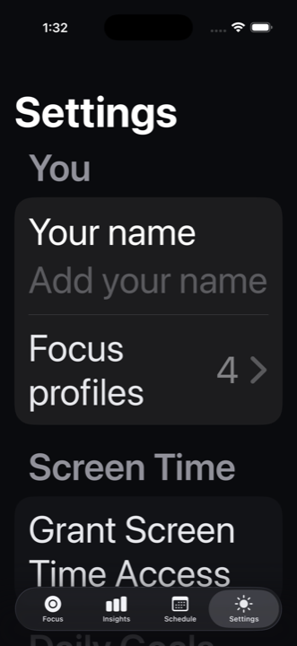
Home (unchanged) vs Settings (scaled) at accessibility XXXL
H1"You're all set" after skipping Screen Time
Tap Maybe later on the permission page and the final page still celebrates completion. The app cannot block anything in this state. Home then shows a dimmed Begin focus under a permission card.
Fix. Branch the last page on authorization: "Almost there — grant Screen Time to start blocking" with the grant button, and only say "all set" when it is true.
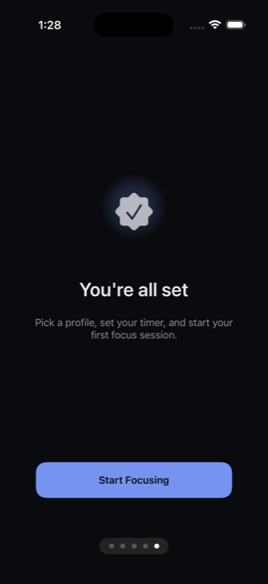
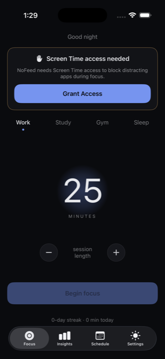
After "Maybe later": "all set", then a Home that cannot start
H2Secondary text fails contrast across the app
100 hard failures and 82 borderline, all the same token: ink at 30% or 55% opacity for eyebrows (HISTORY, FOCUSING · WORK, MINUTES), captions (Demo · Notes, Ended early), chart day letters, and editor helper text.
Fix. Raise the floor: 0.30 → 0.55 for anything that carries information, keep 0.30 only for decorative hairlines. A 4.5:1 ratio needs roughly 0.62 opacity on the cream ground and 0.58 on the dark canvas.
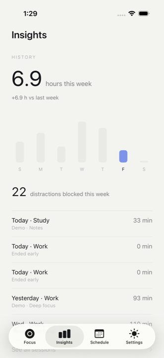
Insights: 47 audit findings, mostly contrast on captions and day letters
H3Schedule editor opens with the keyboard over its two required fields
A new schedule focuses the optional Title field. The keyboard then covers Days and Profile, the only things the form needs. The helper text itself says a title was never needed. The same behaviour broke the UI test until it learned to dismiss the keyboard first.
Fix. Do not auto-focus the title on a new schedule.
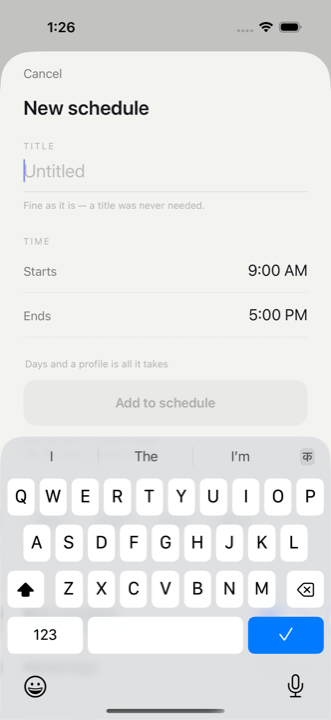
Days and Profile are below the keyboard
H4Two permission prompts back to back on first landing
Seconds after the Screen Time prompt, Home raises the system notifications prompt with no in-app explanation of what notifications are for.
Fix. Ask when the first session starts (its end-of-session alert is the first real reason), preceded by one line of rationale.
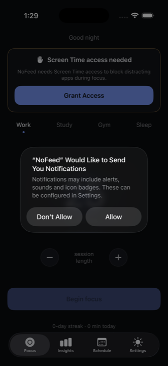
First landing on Home
M1Promises that point at nothing
Onboarding says "unlock badges"; there is no badges screen. Settings › Daily Goals says targets are "shown as progress orbs on Insights"; Insights draws bars. The Streak goal stepper changes nothing. A daily 9 am "New daily challenge" notification opens an app with no challenge screen.
Fix. Rewrite the onboarding line to what exists, delete the footer sentence, remove the streak-goal stepper or make Insights use it, and drop the challenge notification until a challenge screen ships.
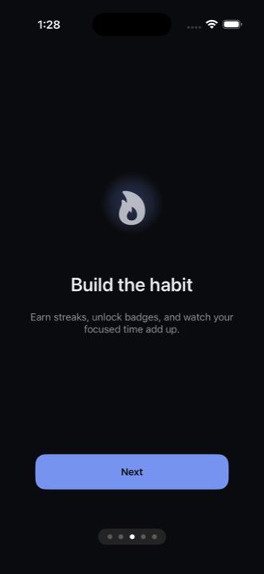
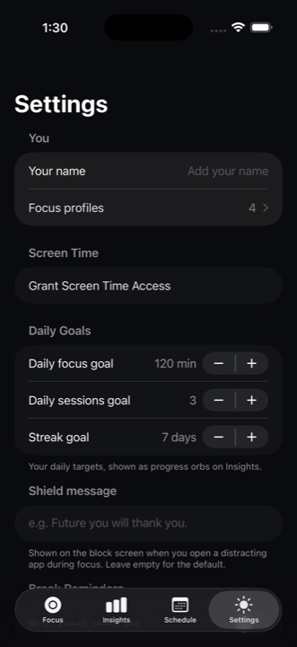
"Unlock badges" and "progress orbs on Insights"
M2Dark-mode bar chart is nearly invisible
Six of seven bars sit at about 3.5% white on near-black and read as empty; only today's bar is visible. The weekly recap chart uses the same fill. In light mode the bars are fine.
Fix. Raise the dark "raise" fill for chart bars to about 12% white, or give non-today bars a 1pt stroke.
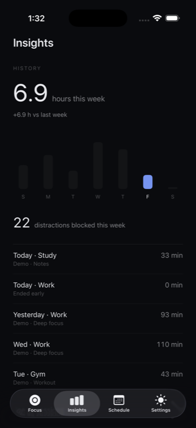
Insights, dark: only Friday's bar reads
M3Profiles are managed from two places
The Schedule tab carries a "Profiles" section with New profile; Settings › Focus profiles is the full list. A profile created from Schedule lands in a list reached from Settings.
Fix. One home. Either the Schedule tab's section links to the same Profiles list, or it goes and the schedule editor's profile picker gets an inline "New profile".
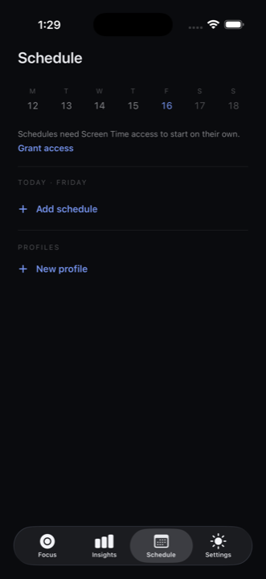
Schedule tab, empty state
M4Strict-mode copy is now untrue
The profile editor says "No early exit once a session starts". Since 2.3 a strict session can be ended by a sixty-second hold.
Fix. "Ending early takes a full minute's hold."
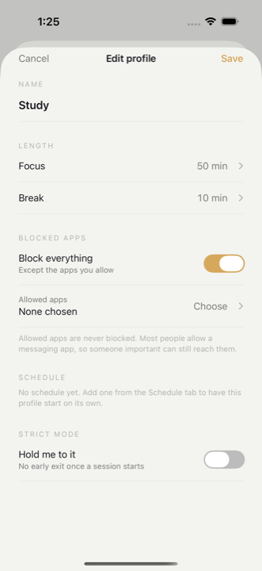
Edit profile › Strict mode
M5Undersized tap targets
29 elements under 44pt: Maybe later, That's all for now, Edit, Save, Cancel, Reorder, Delete profile, and the seven dates in the Schedule week strip.
Fix..frame(minHeight: 44) plus .contentShape(Rectangle()) on text buttons. If the week-strip dates are not tappable, hide them from accessibility so they are not offered as targets.
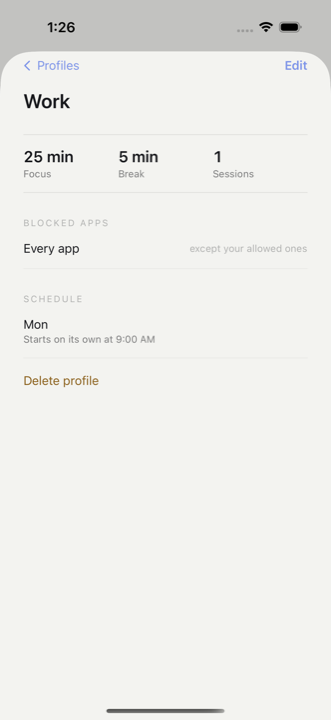
Profile detail: Profiles, Edit and Delete profile all under 44pt
M6Delete-profile sheet clips its own text
The audit flags clipped text on Delete "Work"?, Delete profile and Keep it, plus four "potentially inaccessible text" nodes on the same sheet. Also "7 seconds focused" on the ended-early screen and Streak goal in Settings.
Fix. Let these labels wrap (no lineLimit(1), fixedSize(horizontal: false, vertical: true)) and let the sheet grow with its content.
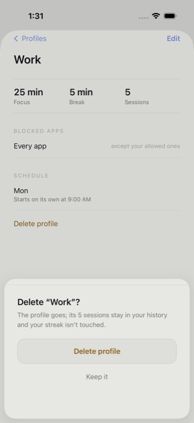
Delete sheet
M7Two visual languages
Settings is a stock grouped form; every other screen is the flat "Quiet" row system. The switch is jarring, and it is also why Settings is the only screen that scales text.
Fix. Port Settings to the Quiet row components, or accept it as the one system-styled screen and record that in the design notes. Fixing C1 removes the strongest reason anyone notices.
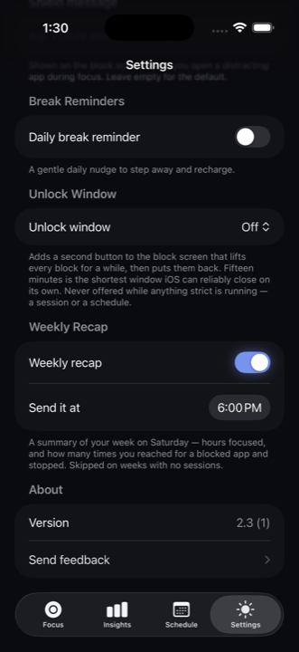
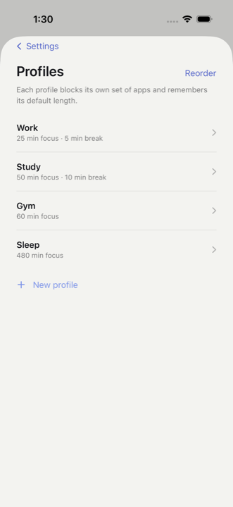
Settings (grouped form) vs Profiles (Quiet rows)
M8Session-detail icon has no readable label
VoiceOver reads the distraction icon by its symbol name, "hand tap fill".
Fix..accessibilityLabel("Reached for a blocked app"), or hide it from accessibility.
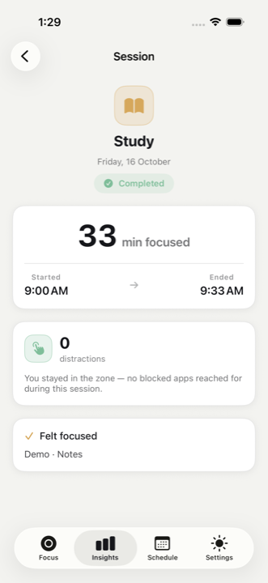
Session detail
Low
L1 Backing out of the system passcode sheet and relaunching restarts onboarding from page 1. Remember the page index.
L2 A session abandoned after 14 seconds shows as "0 min · Ended early" on Insights. Show seconds under a minute, or omit minutes for ended-early rows.
L3 "+6.9 h vs last week" on a first week compares against a week that never happened. The recap already handles this with "Your first week"; reuse that rule.
L4Delete profile is drawn in the amber warning tone. iOS users read red as destructive; amber reads as caution.
L5 A profile saved "without blocking" is indistinguishable in the list afterwards. Add a "Blocks nothing yet" subtitle.
L6 Home leaves about 40% of a tall phone empty between the profile row and the orb.
L7 About has no privacy policy or support link. Both exist on the website.
L8 Home's dimmed Begin focus has no caption next to it saying why. The reason sits in a card at the top.
Accessibility audit totals
Apple's automated audit, run on 24 screens by the new AccessibilityAudit UI test. Per-screen files are in light/a11y/ in the repo.
Finding
Count
Where
Dynamic Type unsupported
250
every custom screen
Contrast failed
100
secondary text, chart labels, eyebrows
Contrast nearly passed
82
same tokens at larger sizes
Hit area too small
29
nav-bar text buttons, week strip, Maybe later, That's all for now
Potentially inaccessible text
6
delete sheet, Settings
Text clipped
5
delete sheet, ended-early, Settings
Dynamic Type partially unsupported
5
Settings footers
Label not human-readable
1
session detail icon
Re-run after fixes; the table above is the baseline.
First launch, declines Screen TimeReads five pages with good pacing and strong copy, skips the permission, is told "You're all set", lands on a Home with a disabled button and a notifications prompt on top. The app is honest everywhere except the one page that matters.
Returning user, a week of historyHome shows streak and today's minutes. Begin focus, pause, resume and hold-to-end all behave. The summary asks how it felt with three chips; the ended-early screen refuses to scold and offers a shorter try. The loop is complete. Only the schedule editor's keyboard and the dark chart trip it.
Assistive-technology userSets the largest text and finds only Settings responds. VoiceOver labels are good on Home, Insights and the editors, but text buttons are small, the delete sheet clips, and one icon reads as "hand tap fill". Blocked by C1; the rest is a day's work.
What is working well
Copy is specific and humane: "Held for you. Nothing is blocked while you're away." "Some days that's what there is."
Hold-to-end is the right gate: impossible by accident, no dialog.
The "Couldn't save" sheet is a model error state. It says why, keeps the input, and offers both exits.
The running-profile delete refusal explains itself in place with a way out.
The schedule clash panel names the conflict and offers two one-tap repairs.
Dark mode is first-class on every custom screen; the Quiet tone system holds together.
Suggested order of work
C1 Dynamic Type, then layout checks at the largest size.
H2 contrast floor: two numbers in the theme file.
H1 and M1 honesty fixes.
H3 schedule editor focus, H4 notification timing.
M5 tap targets, M6 clipping, M8 icon label.
M2 dark chart, M3 profile entry points, M4 strict copy.
Lows as time allows.
After the fixes
Every finding was acted on the same day. The audit was re-run on all 24 screens and the largest text size re-captured.
Dynamic Type unsupported250 → 1 Fonts now scale with the text size, capped at the first accessibility step so the fixed layouts still fit. The 181 "partially unsupported" entries are that cap.
Contrast failed100 → 36 Secondary ink floored at 66% / 72%. What remains is tone-coloured accents and the app-paused preview copy.
Hit area too small29 → 12 All named buttons are 44pt. The 12 left are unlabeled elements the List exposes on the Profiles screen.
All findings478 → 257 Per-screen files in after/a11y/.
ID
Status
Change
C1
Fixed
System face via Font.custom(_:size:relativeTo:); growth capped on the app root
H1
Fixed
Last onboarding page: "Almost there" with grant and "Continue without blocking" when permission was skipped
H2
Fixed
Ink floor 30% → 66%, 55% → 72%
H3
Fixed
Schedule editor no longer focuses the title on open
H4
Fixed
Notifications asked at the first session start, after a one-line alert
M1
Fixed
Badges line and "progress orbs" footer rewritten; streak-goal stepper and challenge notification gone
M2
Fixed
New chartBar token, 14% white in dark
M3
Fixed
"All profiles" row on the Schedule tab opens the same list as Settings
M4
Fixed
"Ending early takes a full minute's hold" in all three editors
M5
Mostly fixed
44pt on every named text button; week strip is one element
M6
Fixed
Delete sheet sizes to its content; ended-early clock scales before clipping
M7
Documented
Settings stays on the system Form by decision, recorded in the file
M8
Fixed
Icon hidden from VoiceOver
L1–L8
Fixed
Onboarding page remembered; "under a minute"; "Your first week"; alert tone on delete; "blocks nothing yet"; orb spacer capped; policy and support links; caption under the dimmed button
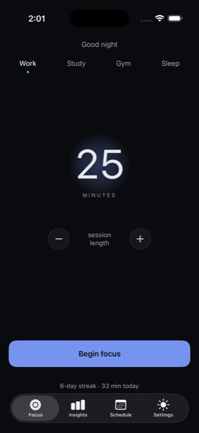
Home after: brighter secondary ink, orb higher
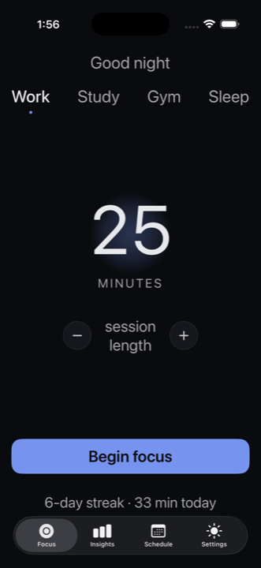
Home at accessibility XXXL: now scales
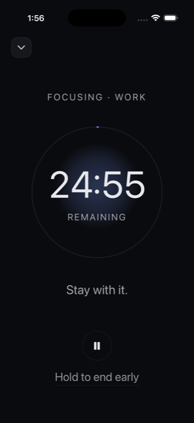
Session at XXXL
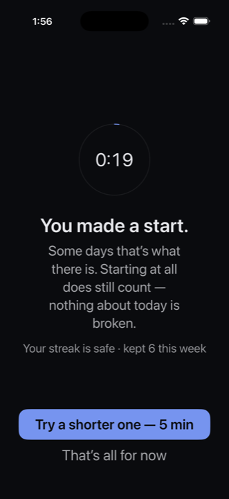
Ended early at XXXL
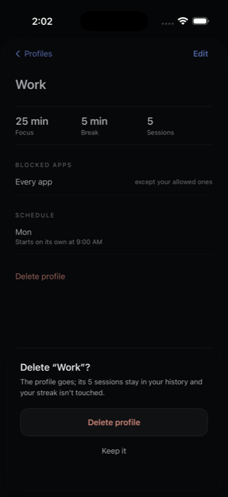
Delete sheet: nothing clipped, alert tone
Every screen
Onboarding and first-run states in dark; the automated tours in light (iPhone 17 Pro) and dark (iPhone 17 Pro Max); the text-size pass on iPhone Air.
Onboarding and first run
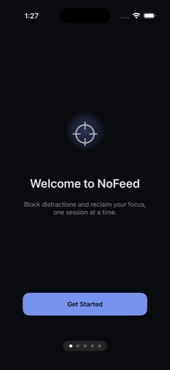
Welcome
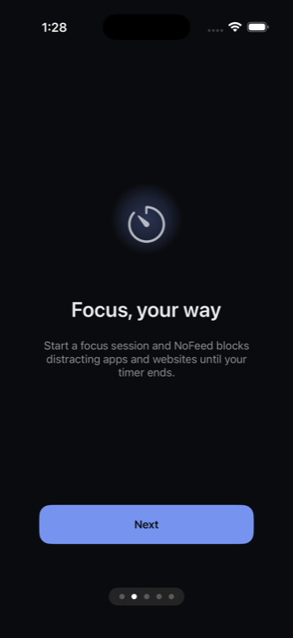
Focus, your wayBuild the habit
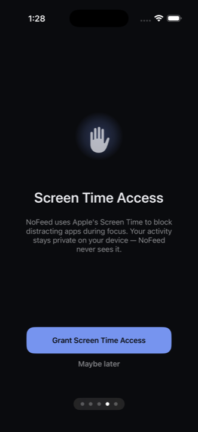
Screen Time accessYou're all setFirst landing: notifications promptHome without permission
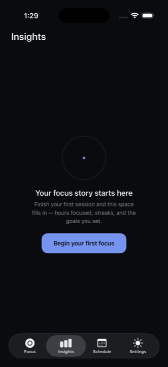
Insights, first runSchedule, empty
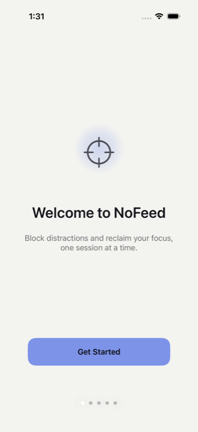
Welcome, light
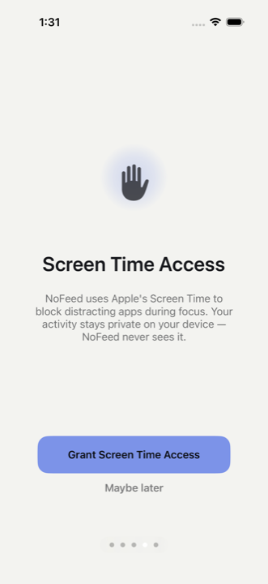
Permission, light
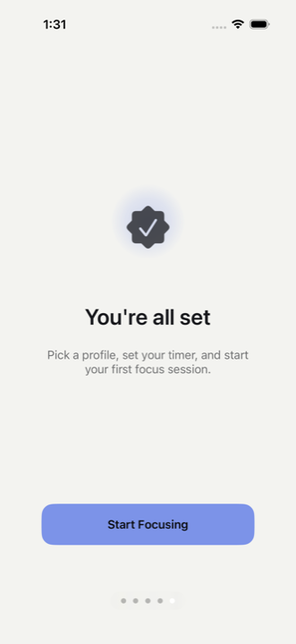
All set, light
Core loop
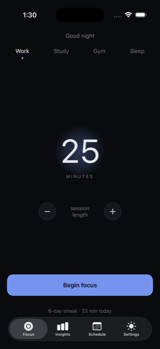
Home, dark
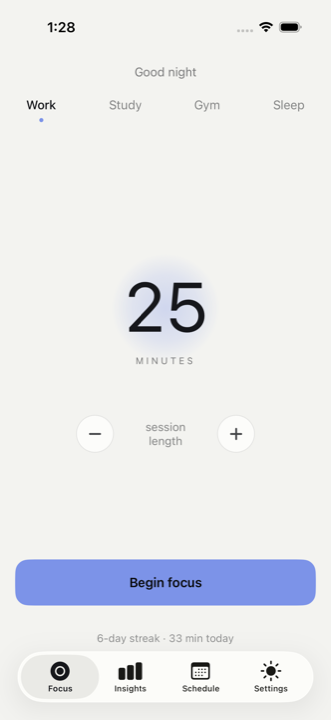
Home, light
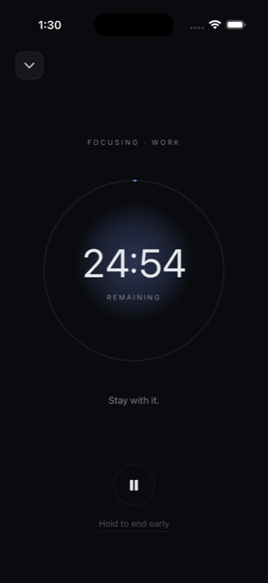
Session, dark
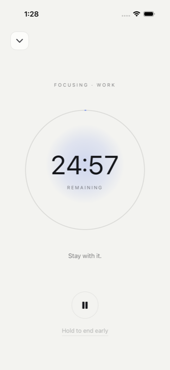
Session, light
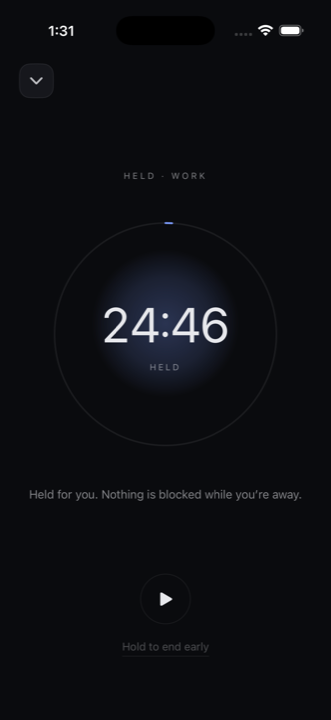
Session held
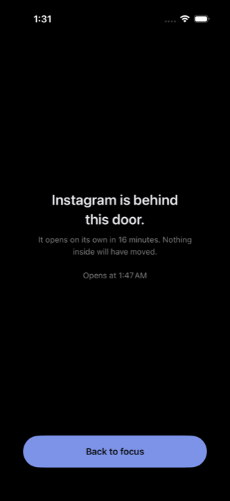
Block screen (preview)
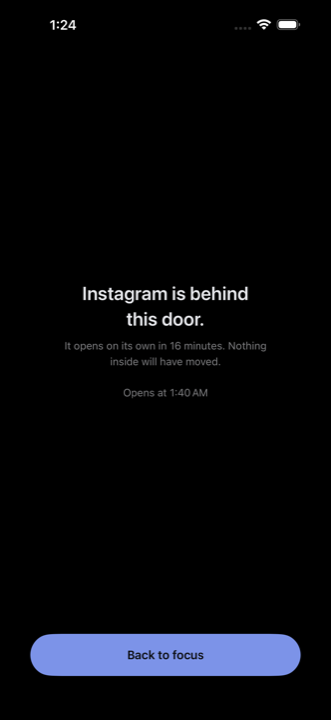
App paused
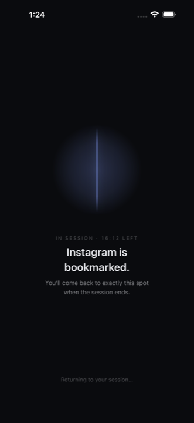
Back to focus
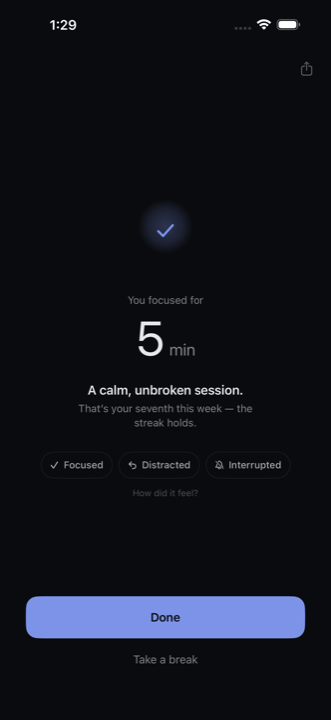
Session complete
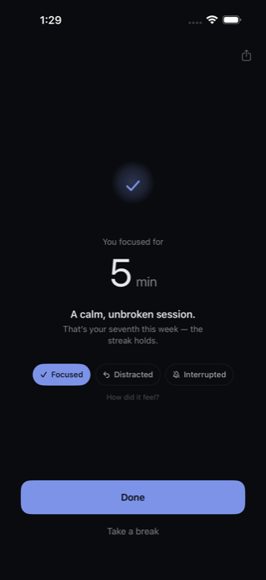
Complete, reflected
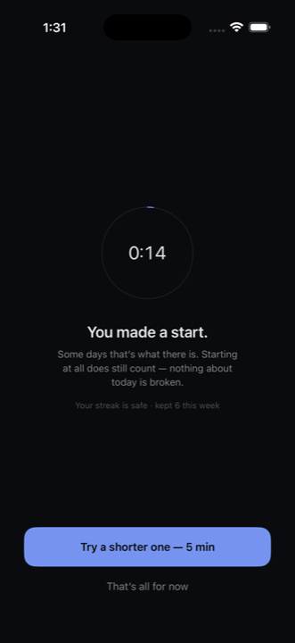
Ended early, dark
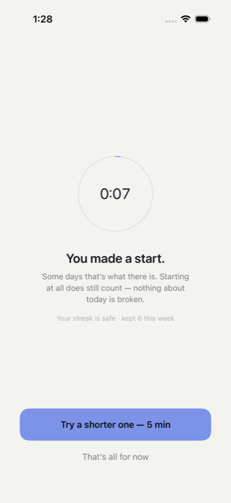
Ended early, light
Insights, history, recap
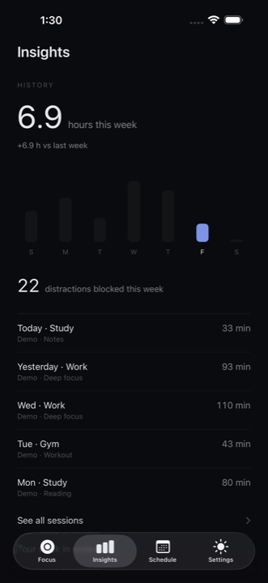
Insights, top
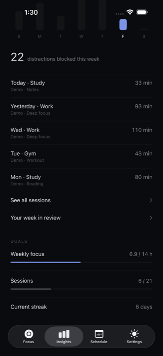
Insights, goals
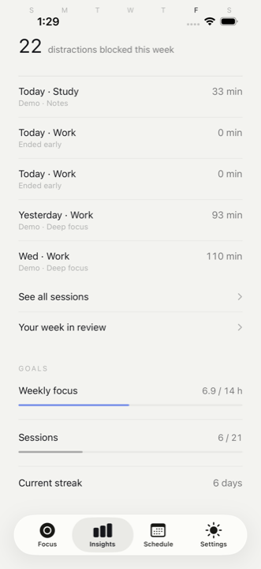
Insights, bottom (light)
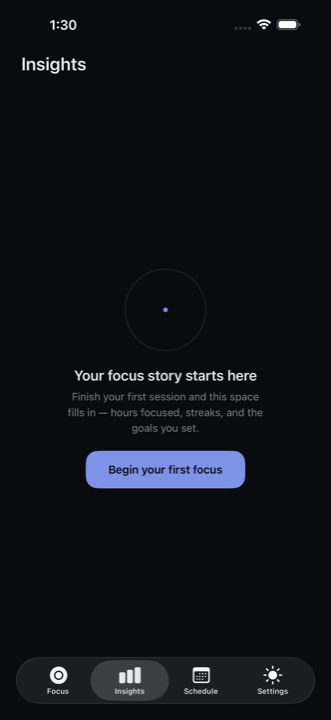
Insights, first run
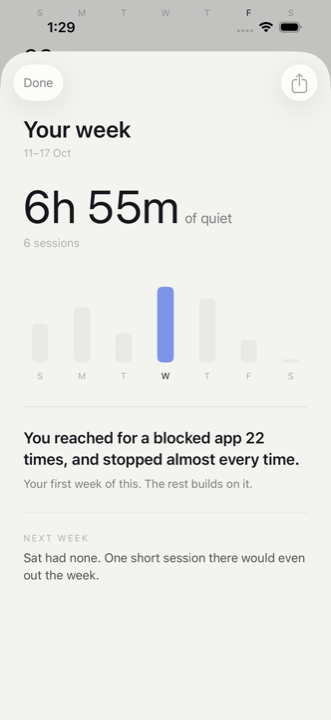
Weekly recap
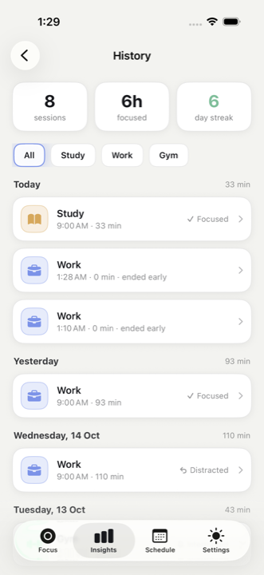
HistorySession detail
Schedule
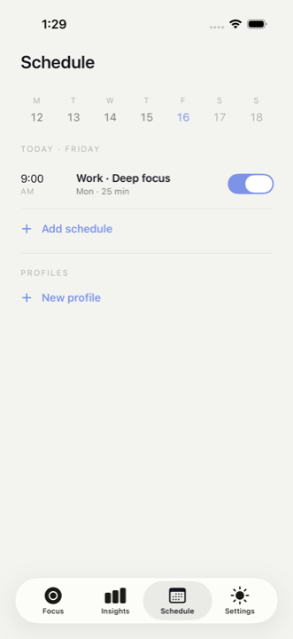
Schedule tabNew scheduleSave with nothing chosen
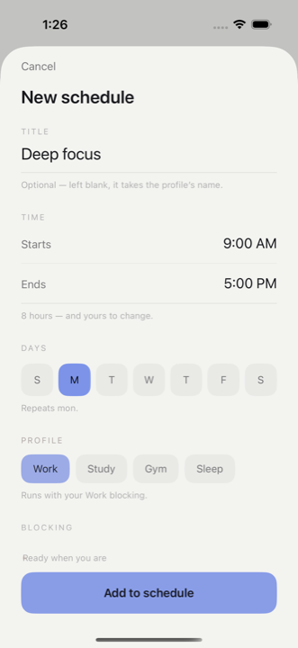
Ready to save
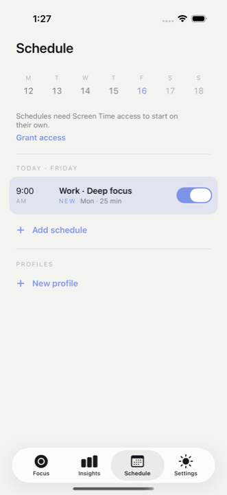
Added
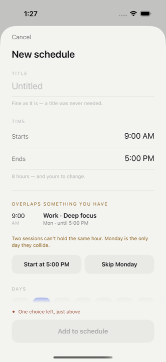
Clash
Profiles
Profiles listProfile detailEdit profileBlocked apps pickerNew profileNothing enteredDuplicate nameReady to saveCouldn't saveSavedSaved, no startDelete sheetCan't delete while runningAfter rename
Settings
Settings, top (dark)Settings, bottom (dark)Settings, top (light)Settings, bottom (light)